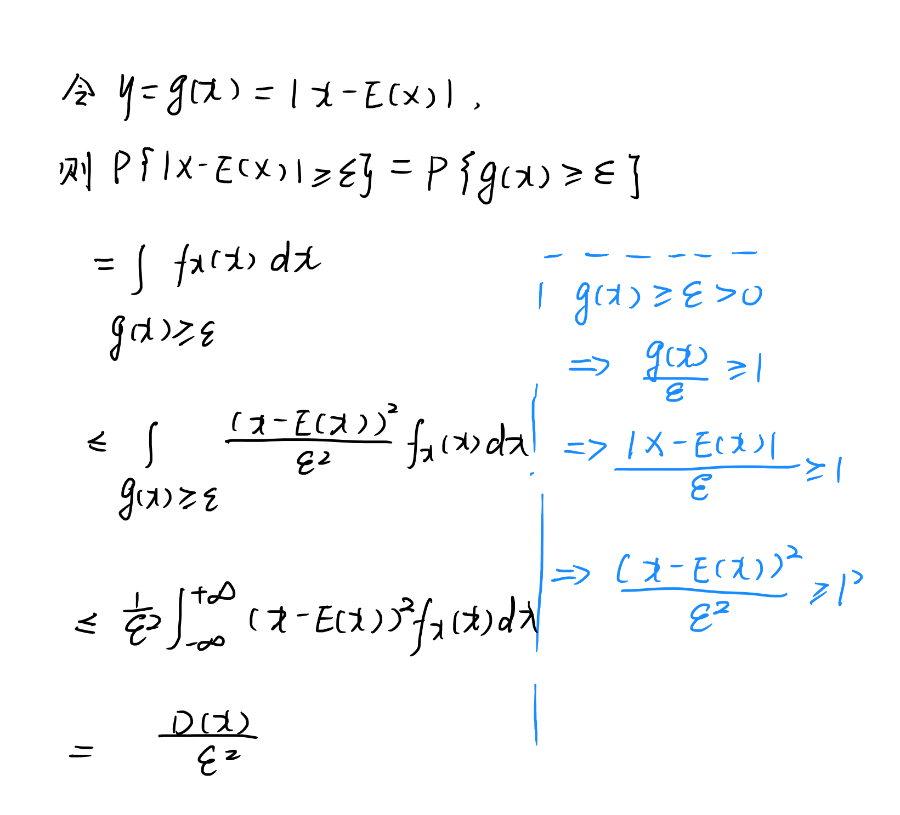

切比雪夫不等式Chebyshev不等式
在概率论中，切比雪夫不等式（英语：Chebyshev's Inequality）显示了随机变量的“几乎所有”值都会“接近”平均。在20世纪30年代至40年代刊行的书中，其被称为比奈梅不等式（英语：Bienaymé Inequality）或比奈梅-切比雪夫不等式（英语：Bienaymé-Chebyshev Inequality）。切比雪夫不等式，对任何分布形状的数据都适用。
定义
若随机变量X,E(X),D(X)存在，对∀ε>0 P{∣X−E(X)∣≥ε}≤ε2D(X)⇔1−p{∣X−E(X)∣≥ε}≥1−ε2D(X)⇔p{∣X−E(X)∣<ε}≥1−ε2D(X) 证明
